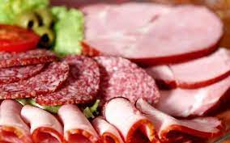

pourquoi eviter la charcuterie et la viandes (hormis la volaille) :

L'excès de produits carnés est ainsi lié à une hausse des maladies cardio-vasculaires, de l'obésité et surtout de certains cancers, à commencer par celui du côlon
Voila des exemples :
Cervelle de porcs : 2195 mg de cholestérol / 100 g